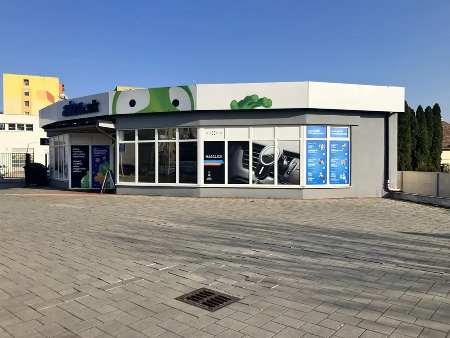
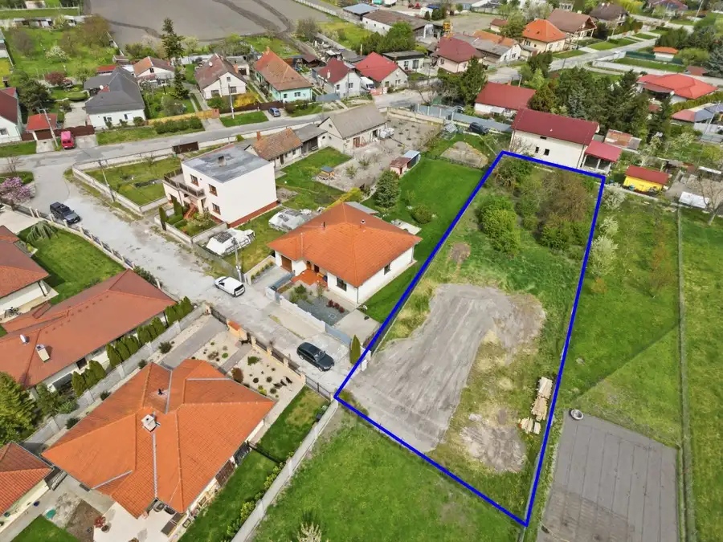
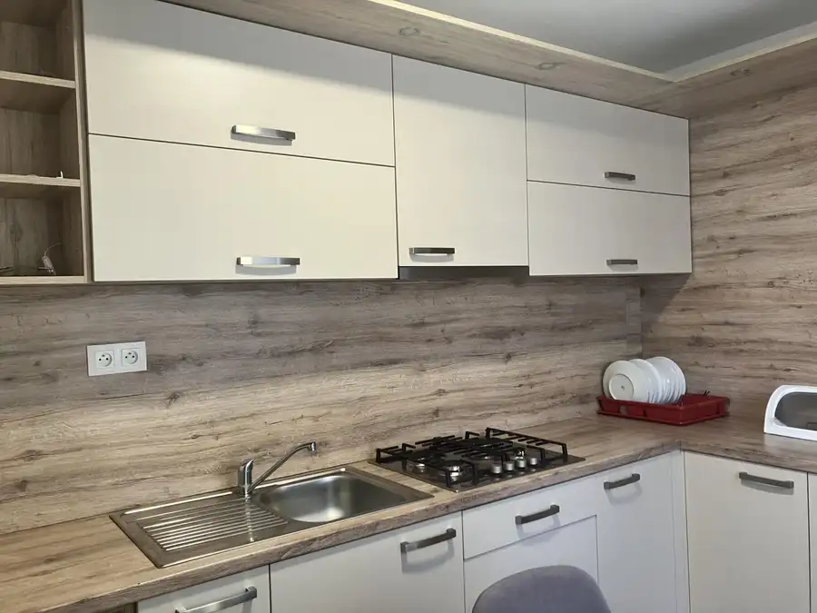

Predaj priestranný 3 izbový byt v Dunajskej Strede
Dunajská Streda
- Dispozícia3-izbový
- Plocha78 m²
- Poschodie3.
- Stavčiastočne prerobený
- Vlastníctvoosobné
O nehnuteľnosti
Ponúkame na predaj veľmi príjemný a svetlý 3- izbový byt v obľúbenej časti Dunajskej Stredy - Nová Ves. Byt pôsobí moderne, vzdušne a je vhodný pre rodinu a pár , ktorý ocení pokojné bývanie s výbornou dostupnosťou služieb.
Dispozícia a priestor
Denná časť pozostáva z priestrannej obývacej izby s dostatkom miesta na oddych aj stretávanie sa s rodinou. Samostatná kuchyňa je prakticky riešená, s jedálenským kútom a dobrou pracovnou plochou.
Nočnú časť tvoria dve samostatné izby ideálne ako spálňa a detská izba alebo pracovňa. Byt má kúpeľňu s vaňou a samostatnú toaletu, čo zvyšuje komfort každodenného bývania. K bytu prislúcha aj pivnica, ktorá poskytuje praktický úložný priestor.
Stav bytu
Byt je čiastočne zrekonštruovaný, udržiavaný a okamžite obývateľný. Kombinácia plávajúcej podlahy a dlažby pôsobí moderne a je ľahko udržiavateľná.
Výhody nehnuteľnosti
- samostatná kuchyňa
- priestranné izby
- veľa uložného priestoru
- pivnica v cene
- tichá a vyhľadávaná lokalita
- kompletná občianská vybavenosť v pešej dostupnosti ( obchody, školy, škôlky, zdravotné služby, MHD )
Lokalita - Nová Ves
Nová Ves patrí medzi obľúbené a pokojné časti mesta Dunajská Streda. Vyznačuje sa výbornou dostupnosťou do centra, zároveň ponúka množstvo možností na oddych.
Cena: 142990€
Ak máte záujem neváhajte ma kontaktovať na alebo na
Parametre
| Úžitková plocha | 78 m² |
|---|---|
| Poschodie | 3 |
| Počet izieb | 3 |
| Vlastníctvo | osobné |
| Stav | čiastočne prerobený |
| Internet | optika |
| Lódžia | áno |
| Pivnica | áno |
| Výťah | áno |
| Zariadenie | zariadený |
| Klimatizácia | áno |
| Dátum zverejnenia | 15. 9. 2026 |
Kde to je
Mohlo by Vás zaujímať

Nebytové priestory9 4 200 €Prenájom obchodný priestor v centre mesta Dunajská Streda Dunajská Streda 300 m² Ponúkame na prenájom priestranný obchodný priestor o celkovej výmere 309 m2 v aktraktívnej a frekventovanej lokalite v Dunajskej Strede. Priestor je…
Pozemok4 155 000 €Na predaj stavebný pozemok v obci Horná Potôň Dunajská Streda 1396 m² Ponúkame Vám na predaj atraktívny stavebný pozemok nachádzajúci sa v tichej a vyhľadávanej lokalite obce Horná Potôň. Pozemok predstavuje mimoriadnu…
Byt10 120 000 €Predaj štýlový 2-izbový byt po kompletnej rekonštrukcii v Dunajskej St Dunajská Streda 2-izbový53 m²1. podlažie Realitná kancelária Vám exkluzívne ponúka na predaj slnečný 2 - izbový byt s pivnicou vo vyhľadávanej lokalite mesta Dunajská Streda na Kukučínovej…